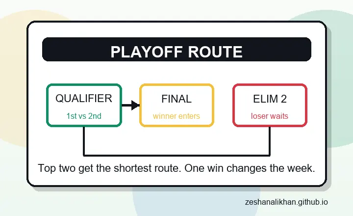

Direct final route
The winner of the Qualifier earns the shortest path to the final, which is why top-two finish matters so much in this format.
The HBL PSL 2026 Qualifier is scheduled for Tuesday, April 28, 2026, at 7:00 PM PKT in Karachi. The teams are still to be confirmed because this match belongs to the top two sides after the league stage, but the format already makes it the cleanest playoff page to follow.
This is the most valuable playoff match before the final because it rewards the two best league-stage teams. The winner goes straight to the HBL PSL final. The loser is not finished, but has to survive the second eliminator route.
That format changes the psychology of the game. It is not a simple knockout where one bad night ends everything. It is a pressure test for table position, depth, captaincy, and calm execution at the point where the tournament stops forgiving soft phases.

The winner of the Qualifier earns the shortest path to the final, which is why top-two finish matters so much in this format.
The losing side still gets another chance, but the route becomes heavier because Eliminator 2 adds another must-handle game.
Karachi night cricket can reward sides that manage powerplay control, middle-over spin, and death-overs clarity without chasing the game too early.
The HBL PSL 2026 Qualifier is scheduled for Tuesday, April 28, 2026, at 7:00 PM PKT in Karachi. It is expected to feature the top two teams after the league stage, with the winner moving directly to the final.
More from our sites
This page sits inside a wider set of live guides, recaps, and utility pages. Use the short list below when you want a few direct jumps without loading a crowded directory page first.